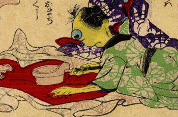

肌の黄色い女の化物。緑色の着物をまとい、火のしで着物のしわをとっている。目玉が大きく飛び出ている。
出典：親書誌：U426_nichibunken_0226：化物の嫁入；バケモノノヨメイリ／日付：2010／資源識別子：U426_nichibunken_0226_0032_0000
Copyright (c)2010- International Research Center for Japanese Studies, Kyoto, Japan. All rights reserved.